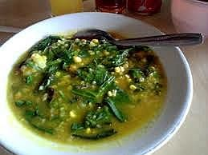

Sambal Bakasang

Bahan-bahan :
- Bakasang / Terasi, 2 sendok teh, bakar
- Ikan cakalang, 4 ruas jari, bakar
- Bawang merah, 4 butir, bakar hingga layu
- Jahe, 1/2 cm
- Garam, secukupnya
- Air jeruk limau, 1 sendok teh
- Tomat, 1 buah, bakar hingga layu
- Cabai merah, 2 buah
- Cabai rawit, 5 buah atau sesuai selera
Cara Membuat :
- Haluskan bakasang, ikan cakalang, bawang merah, tomat, cabai merah, cabai rawit, jahe dan garam hingga halus.
- Tambahkan air jeruk, aduk rata.